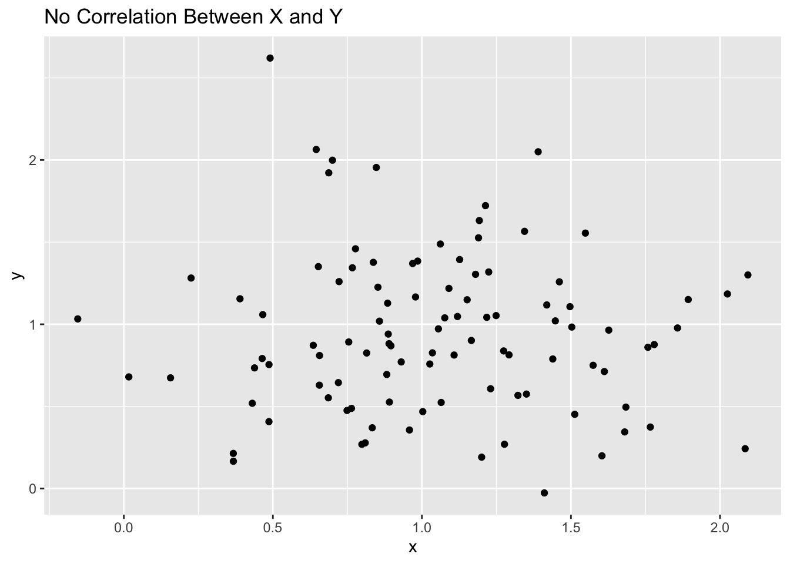

Correlations are used to understand a relationship between two variables.
It is important to understand that correlations DO NOT say anything about how much Y changes when X changes. Rather it only describes the ‘relationship’ between two variables.
Correlations can describe two things: direction and strength of a relationship.
Direction (+/-)
A positive correlation means that when one variable increases another variable increases as well.
A negative correlation means that when one variable goes up another variable decreases.
Strength
Correlations range from -1.0 to +1.0.
The closer it is to +1 or -1, the more closely the two variables are related. (Strong)
If the correlation is close to 0, it means there is no relationship.
Furthermore, to describe correlations we look at the direction (positive or negative) and strength (the number)
Strong: the relationship is very consistent
Weak: the relationship exists, but is not very strong or consistent
Positive: when one variable increases, the other tends to increase
Negative: when one variable increases, the other tends to decrease
REMINDER: THE NUMERICAL VALUE DOES NOT DESCRIBE HOW MUCH CHANGE JUST THE STRENGTH OF THE RELATIONSHIP.
Example 1:
In the first example, we are looking a randomly generated data to see how we can identify correlations visually based on scatter plots. I have provided 5 examples.
library(tidyverse)
── Attaching core tidyverse packages ──────────────────────── tidyverse 2.0.0 ──
✔ dplyr 1.1.4 ✔ readr 2.1.5
✔ forcats 1.0.0 ✔ stringr 1.5.1
✔ ggplot2 3.5.2 ✔ tibble 3.3.0
✔ lubridate 1.9.4 ✔ tidyr 1.3.1
✔ purrr 1.1.0
── Conflicts ────────────────────────────────────────── tidyverse_conflicts() ──
✖ dplyr::filter() masks stats::filter()
✖ dplyr::lag() masks stats::lag()
ℹ Use the conflicted package (<http://conflicted.r-lib.org/>) to force all conflicts to become errors
set.seed(123)x =rnorm(100, mean =1, sd = .5)y =rnorm(100, mean =1, sd =0.5)d1 <-data.frame(x = x,y = y + x*.5)d2 <-data.frame(x = x,y = y + x*-.5)d3 <-data.frame(x = x,y = y + x*1)d4 <-data.frame(x = x,y = y + x*-1)d5 <-data.frame(x = x,y = y)# visualize the correlations through a scatter plot# weak positive correlationggplot(d1, aes(x, y)) +geom_point() +labs(title="Weak Positive Correlation Between X and Y")
# weak negative correlationggplot(d2, aes(x, y)) +geom_point() +labs(title="Weak Negative Correlation Between X and Y")
# strong positive correlationggplot(d3, aes(x, y)) +geom_point() +labs(title="Strong PositiveCorrelation Between X and Y")
# strong negative correlationggplot(d4, aes(x, y)) +geom_point() +labs(title="Strong Negative Correlation Between X and Y")
# no correlationggplot(d5, aes(x, y)) +geom_point() +labs(title="No Correlation Between X and Y")

Example 2:
Now in example 2, I have randomly generated data on a fake data set to understand how to use the the cor() function and how to visually plot correlations to illustrate it.
age <-sample(18:100, 100, replace =TRUE)gender <-sample(c(1, 0), 100, replace =TRUE) # 1 = Female, 0 = Malekids <-sample(0:5, 100, replace =TRUE)# Now build the data.frame with dependent vars defined inlinedata <-data.frame(age = age,gender = gender,height =rnorm(100, mean =5.5, sd =0.75) + gender *-0.25,kids = kids,income =rnorm(100, mean =45000, sd =10000) + age *1000+ gender * (-2000) + kids * (-3000),years_edu =sample(10:23, 100, replace =TRUE) + age *1+ gender *2)head(data)
The cor() function allows us to clalculate the correlation between two or more variables. My first example is looking at only variables and then visualizing it through a scatter plot.
# correlation for only two variablescor(data$age, data$income)
[1] 0.9260033
# visualize the correlations through a scatter plotggplot(data, aes(x = age, y = income)) +geom_point()
Since the correlation score is 0.89, we can determine there is strong positive relationship between age and income, stating that as age increases so does income. Which is seen in our scatter plot as well.
Next, we will examine our full data set. Doing this only works if you have only numerical values, it does not work for non numerical values.
# correlations for all variables in the datasetcor(data)
age gender height kids income
age 1.00000000 0.01613562 0.12926437 -0.04294040 0.92600327
gender 0.01613562 1.00000000 -0.24154026 0.02198794 -0.02963598
height 0.12926437 -0.24154026 1.00000000 0.01487277 0.09756631
kids -0.04294040 0.02198794 0.01487277 1.00000000 -0.26536753
income 0.92600327 -0.02963598 0.09756631 -0.26536753 1.00000000
years_edu 0.98540459 0.08326801 0.11777500 -0.05497819 0.91578590
years_edu
age 0.98540459
gender 0.08326801
height 0.11777500
kids -0.05497819
income 0.91578590
years_edu 1.00000000
We can visualize this using the ggcorrplot() function.
# install.packages("ggcorrplot")library(ggcorrplot) # for ggcorrplot()# save correlation values as a variablecor_data <-cor(data)# plot the correlation valuesggcorrplot(cor_data)